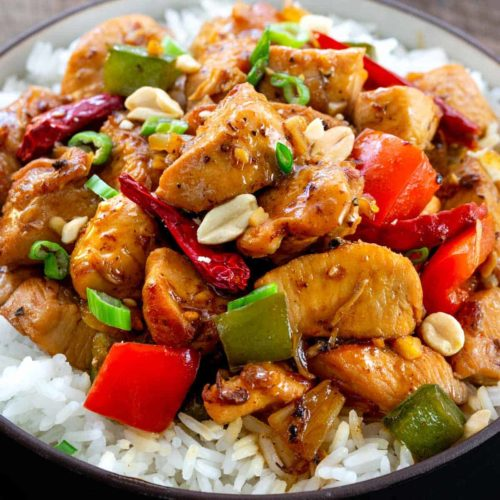
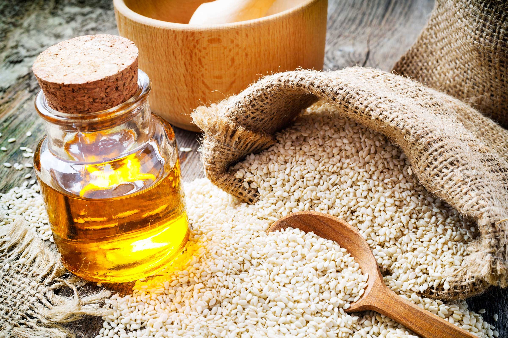
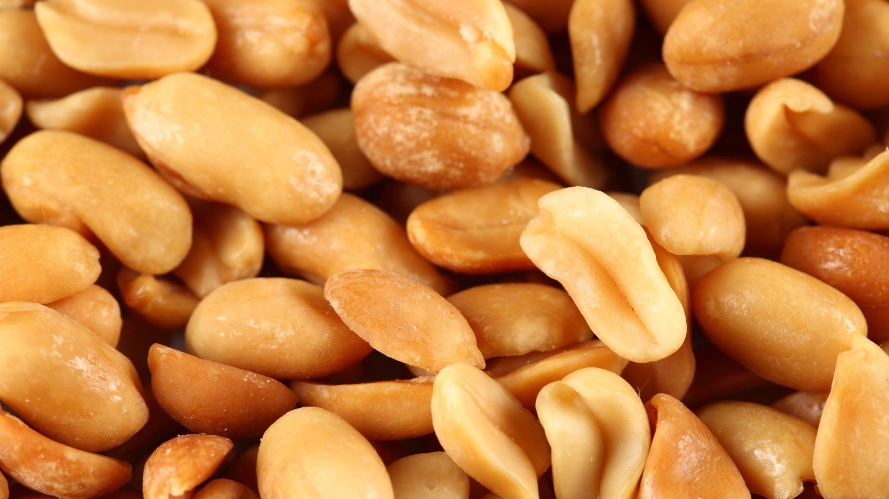
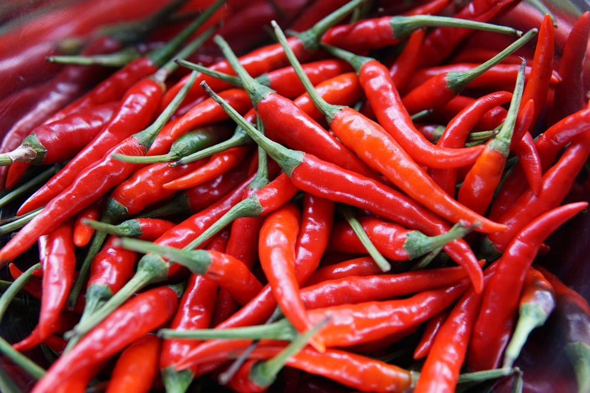

Kung Pao Chicken
What comes to your mind when ordering Chinese food in a restaurant? I bet your answer would be “Kung Pao Chicken”.
Commonly seen in the US TV series, Kung Pao Chicken has spread around the world as typical Chinese food.
It is basically diced chicken cooked with peanuts, cucumbers, and peppers. This red cuisine is moderately
spicy with tender meat and delicious flavor..
Ingrediants

Breast1 lb chicken breast(455 g), chopped |

Oil1 tablespoon sesame oil |

Peanuts30 g peanuts(30 g) |

Chili8 dried chili pods, dried |